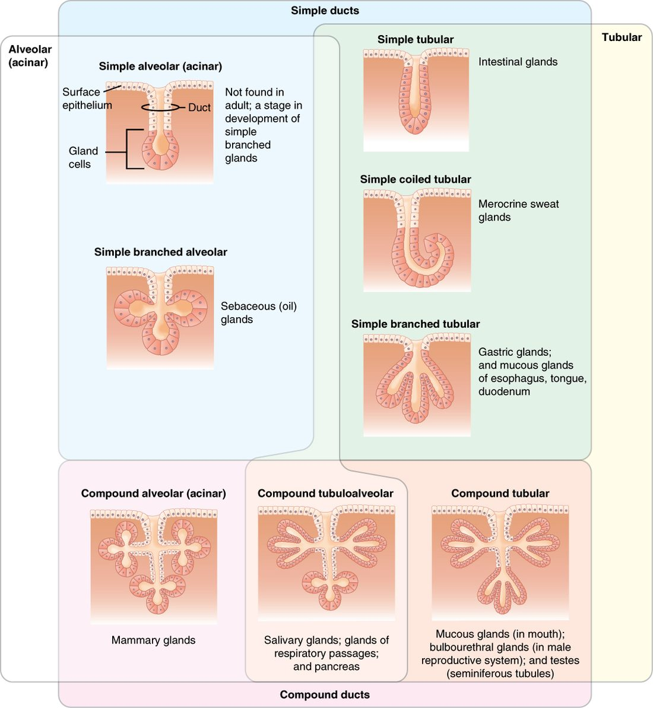

Endocrine vs exocrine glands: the difference is not what the gland makes. It is where the product goes. An exocrine gland empties through a tube onto a surface. An endocrine gland has no tube and releases its product into the fluid around it, where it enters your blood. This page builds both kinds from the epithelium you already know, then shows the three ways a gland cell can release what it makes.
Start with one organ that does both
Picture your pancreas. Most of its cells make digestive enzymes. Those enzymes drain into a system of tubes that ends in your gut, where they break down food. Scattered between those cells are small clusters of different cells. They make hormones, and their hormones go straight into the blood vessels running through the organ.
Same organ, two destinations. If a tumor blocks the pancreas's main tube, enzymes stop reaching your gut, but hormone release carries on, because the hormone cells never used the tube. That one example holds the whole topic.
What a gland is
A gland (Latin glans = acorn, from the shape of some glands) is one cell or a group of cells that makes a product and releases it. That release is secretion. Glands are built from epithelium. During development, a patch of surface epithelium grows down into the connective tissue beneath it. The cells in that downgrowth become the gland.
What happens next decides the gland's type:
- If the downgrowth keeps a connection to the surface, that connection becomes a duct: a tube of epithelial cells. The gland is exocrine.
- If the connection breaks down and disappears, the gland is left as a ductless island of cells surrounded by capillaries. The gland is endocrine.
Figure 1 shows the two results side by side. Most glands form this way. A few endocrine tissues, such as parts of the adrenal glands, develop from other tissues instead, but they end up with the same ductless, capillary-rich layout.
Exocrine glands
An exocrine gland (exo- = outside, -crine = to secrete) releases its product into a duct, and the duct carries it to a surface. That surface can be your skin or the lining of a hollow organ, such as the inside of your gut or airway. The product acts where it lands. Digestive enzymes, mucus, and the oily and watery films on your skin all come from exocrine glands.
One cell or many
The smallest exocrine gland is a single cell. You met it in the epithelium topic: the goblet cell. It sits among the columnar cells of your gut and airway lining and releases mucus straight onto the surface. It needs no duct, because it already sits on the surface. Every other exocrine gland is multicellular, with two parts:
- the secretory portion, where the cells make the product
- the duct, which carries the product to the surface
Naming multicellular glands by shape
Anatomists name a multicellular exocrine gland with two words, as in Figure 2:
- Duct: a simple gland has one unbranched duct. A compound gland has a duct that branches, like a tree.
- Secretory portion: a tubular gland's secretory part is a tube. An alveolar gland (alveolus = small hollow), also called an acinar gland (acinus = grape), ends in rounded sacs. A tubuloalveolar gland has both.
So "compound alveolar" means a branching duct system ending in clusters of sacs. The digestive-enzyme part of your pancreas is built along these lines (its sacs are slightly elongated, so many texts call it compound tubuloalveolar). Branching gives a small organ a very large number of secretory cells, all draining into one main duct.

Serous and mucous glands
Exocrine glands also differ in what they release:
- A serous gland (ser/o = watery fluid) releases a thin, watery fluid, often rich in enzymes. Its cells are packed with vesicles of protein.
- A mucous gland releases mucus: water plus large glycoproteins called mucins, which make it thick and sticky.
Note the spelling. Mucus is the noun, the substance. Mucous is the adjective, as in "mucous gland". Many glands contain both serous and mucous cells.
Endocrine glands
An endocrine gland (endo- = within, -crine = to secrete) has no duct, so it is also called a ductless gland. Its cells release hormones into the interstitial fluid around them. The hormone diffuses into nearby capillaries and travels in the blood. It reaches every tissue, but it changes only the target cells that carry a matching receptor protein.
Endocrine glands are richly supplied with capillaries, so every hormone-making cell sits close to one. Your thyroid gland, pituitary gland and adrenal glands are endocrine glands. The pancreas is a mixed gland: its enzyme cells are exocrine, and its scattered hormone clusters are endocrine.
Compare this with the signals you met in the chemical signaling topic. A paracrine signal diffuses to neighboring cells and acts there. An endocrine signal enters the blood and can act far away. The gland that releases a hormone is defined by that route, not by the chemical it makes.
| Exocrine gland | Endocrine gland | |
|---|---|---|
| Duct | Yes, except single-cell glands such as goblet cells | No (ductless) |
| Where the product goes | Onto a surface: skin, or the inside of a hollow organ | Into interstitial fluid, then into blood |
| Where the product acts | At or near that surface | On target cells anywhere in the body that carry its receptor protein |
| Typical products | Enzymes, mucus, watery or oily films | Hormones |
| Blood supply | Ordinary | Dense capillary network |
| Built from | Epithelium that kept its link to the surface | Epithelium that lost its link to the surface |
| Examples | Goblet cells; the enzyme part of the pancreas | Thyroid, pituitary and adrenal glands; the hormone clusters of the pancreas |
How a gland cell makes and releases its product
A protein product follows the secretory pathway you learned earlier. Ribosomes on the rough endoplasmic reticulum build the protein. The Golgi apparatus modifies it and packs it into secretory vesicles. The vesicles move to the apical surface, the side facing the duct or surface. There each vesicle fuses with the plasma membrane and empties its contents outside the cell. That fusion is exocytosis.
Gland cells differ in what happens to the cell itself during release. That gives the three modes of secretion.
The three modes of secretion
Figure 3 shows all three. The names describe how much of the cell leaves with the product.

Merocrine secretion: the cell stays whole
In merocrine secretion (mero- = part), vesicles release their contents by exocytosis and the cell loses nothing else. It keeps working and releases more product later. This is by far the most common mode. The enzyme cells of your pancreas, goblet cells and most sweat-producing glands work this way.
Apocrine secretion: the top of the cell pinches off
In apocrine secretion (apo- = off, away from), the product collects at the apical end of the cell. That end then pinches off, wrapped in a piece of plasma membrane and carrying a little cytoplasm with it. The cell repairs its membrane and carries on. The clearest example in your body is the milk-making gland of the breast. Its cells release fat droplets this way: each droplet leaves wrapped in the cell's own membrane.
Holocrine secretion: the whole cell is the product
In holocrine secretion (holo- = whole), a cell fills with product until it breaks apart. The dead cell and its contents together become the secretion. The oil glands of your skin work this way.
A holocrine gland loses cells steadily, so it needs a steady supply of new ones. Stem cells at the base of the gland divide by mitosis. The new cells move inward, fill with product, and break apart in turn. Block that cell division and the gland's output falls.
| Merocrine | Apocrine | Holocrine | |
|---|---|---|---|
| What leaves the cell | Vesicle contents only | Product plus the apical part of the cell | The whole cell |
| Release mechanism | Exocytosis | Apical end pinches off | Cell breaks apart |
| Does the cell survive? | Yes, unchanged | Yes, after repairing its membrane | No; stem cells replace it |
| Example | Enzyme cells of the pancreas; goblet cells | Fat release in the milk-making gland of the breast | Oil glands of the skin |
Putting it together
To classify any gland, ask three questions in order. Does it have a duct? That tells you exocrine or endocrine. If it is exocrine, what shape are its duct and secretory part? That gives names like "simple tubular" or "compound alveolar". How does each cell release its product? That gives merocrine, apocrine or holocrine. The endocrine glands return in full in the endocrine chapter, and several exocrine glands return with the skin and the digestive system.